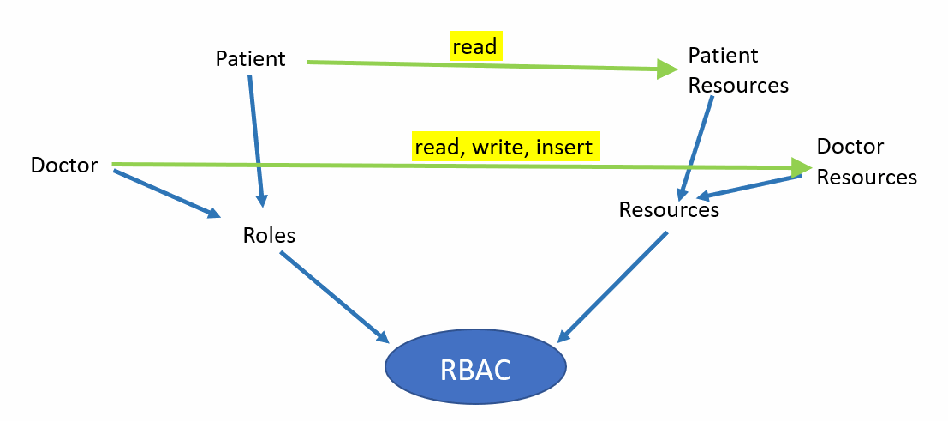
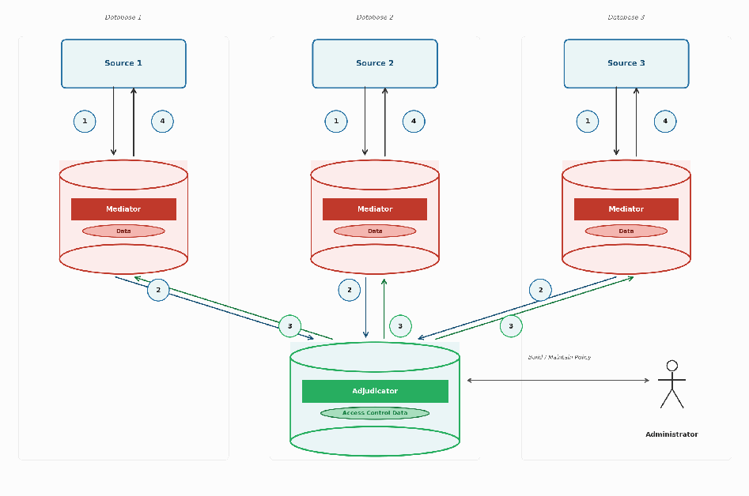

NIST IR 8611 日本語訳
英語タイトル : m-NGAC: Transcending Traditional Database Security Models日本語タイトル : m-NGAC：従来のデータベースセキュリティモデルを超えて
公開日 : 2026-08-27
原文URL : https://csrc.nist.gov/pubs/ir/8611/final
翻訳編集 : 自動生成（有志による非公式の日本語訳）, 原文取得日 : 2026-10-31, 訳文 : 181 / 185 ブロック
[要約] NIST IR 8611 は、従来のデータベースアクセス制御の実践の限界を検討し、m-NGAC（embedded Next Generation Access Control、組み込み型次世代アクセス制御）を紹介する報告書です。m-NGAC は、ANSI/INCITS NGAC 標準をデータベース内に直接組み込む新しいシステムで、個々の列データのレベルでアクセス制御を強制し、SQL エディタを含め、問い合わせに使うツールにかかわらずデータのセキュリティを確保します。従来の GRANT/REVOKE によるアクセス制御の限界を述べたうえで、m-NGAC のアーキテクチャ、トランザクションフロー、ポリシーの構築、強制のメカニズムを詳述します。さらに、m-NGAC を従来のデータベースアクセス制御や、NDAC などのきめ細かなデータベースアクセス制御メカニズムと比較します。
NIST Internal Report
NIST 内部報告書
NIST IR 8611
NIST IR 8611
m-NGAC
m-NGAC
Transcending Traditional Database Security Models
従来のデータベースセキュリティモデルを超えて
Gopi Katwala
Gopi Katwala
This publication is available free of charge from: https://doi.org/10.6028/NIST.IR.8611
本刊行物は次の URL から無償で入手できます: https://doi.org/10.6028/NIST.IR.8611
NIST Internal Report
NIST 内部報告書
NIST IR 8611
NIST IR 8611
m-NGAC
m-NGAC
Transcending Traditional Database Security Models
従来のデータベースセキュリティモデルを超えて
Gopi Katwala Computer Security Division
Gopi Katwala コンピュータセキュリティ部門
Information Technology Laboratory
情報技術研究所
This publication is available free of charge from: https://doi.org/10.6028/NIST.IR.8611
本刊行物は次の URL から無償で入手できます: https://doi.org/10.6028/NIST.IR.8611
August 2026
2026 年 8 月
［米国商務省の紋章。公的な標章のため、この非公式サイトには掲載していません。原本 PDF を参照してください。］
U.S. Department of Commerce Howard Lutnick, Secretary
米国商務省 Howard Lutnick 長官
National Institute of Standards and Technology
米国国立標準技術研究所
Arvind Raman, NIST Director and Under Secretary of Commerce for Standards and Technology
Arvind Raman、NIST 所長兼標準・技術担当商務次官
Certain equipment, instruments, software, or materials, commercial or non-commercial, are identified in this paper in order to specify the experimental procedure adequately. Such identification does not imply recommendation or endorsement of any product or service by NIST, nor does it imply that the materials or equipment identified are necessarily the best available for the purpose.
本論文では、実験手順を適切に特定するために、商用・非商用を問わず、特定の機器、器具、ソフトウェア、材料を挙げています。こうした特定は、NIST がいずれかの製品やサービスを推奨または支持していることを意味せず、特定された材料や機器がその目的に最適であるとは限らないことも意味しません。
There may be references in this publication to other publications currently under development by NIST in accordance with its assigned statutory responsibilities. The information in this publication, including concepts and methodologies, may be used by federal agencies even before the completion of such companion publications. Thus, until each publication is completed, current requirements, guidelines, and procedures, where they exist, remain operative. For planning and transition purposes, federal agencies may wish to closely follow the development of these new publications by NIST.
本刊行物には、NIST が法令で定められた責務に従って現在策定中の他の刊行物への参照が含まれている場合があります。概念や方法論を含む本刊行物の情報は、そうした関連刊行物の完成前であっても、連邦機関が利用してかまいません。したがって、各刊行物が完成するまでは、現行の要件、ガイドライン、手順が存在する場合、それらが引き続き有効です。計画と移行のため、連邦機関は NIST によるこれらの新しい刊行物の策定を注意深く追跡すべきです。
Organizations are encouraged to review all draft publications during public comment periods and provide feedback to NIST. Many NIST cybersecurity publications, other than the ones noted above, are available at https://csrc.nist.gov/publications.
組織は、パブリックコメント期間中にすべてのドラフト刊行物を確認し、NIST にフィードバックを提供することが推奨されます。上記以外の多くの NIST サイバーセキュリティ刊行物は https://csrc.nist.gov/publications で入手できます。
NIST Technical Series Policies Copyright, Use, and Licensing Statements NIST Technical Series Publication Identifier Syntax
NIST 技術シリーズのポリシー 著作権、使用、ライセンスに関する声明 NIST 技術シリーズ刊行物の識別子の構文
Publication History Approved by the NIST Editorial Review Board on 2026-08-18
刊行履歴 2026-08-18 に NIST 編集審査委員会により承認されました
How to Cite this NIST Technical Series Publication Katwala G (2026) m-NGAC: Transcending Traditional Database Security Models. (National Institute of Standards and Technology, Gaithersburg, MD), NIST Internal Report (IR) NIST IR 8611. https://doi.org/10.6028/NIST.IR.8611
この NIST 技術シリーズ刊行物の引用方法 Katwala G (2026) m-NGAC: Transcending Traditional Database Security Models. (National Institute of Standards and Technology, Gaithersburg, MD), NIST Internal Report (IR) NIST IR 8611. https://doi.org/10.6028/NIST.IR.8611
Author ORCID iD Gopi Katwala: 0009-0008-1886-5113
著者の ORCID iD Gopi Katwala: 0009-0008-1886-5113
Contact Information ir8611-comments@nist.gov
連絡先 ir8611-comments@nist.gov
National Institute of Standards and Technology Attn: Computer Security Division, Information Technology Laboratory 100 Bureau Drive (Mail Stop 8930) Gaithersburg, MD 20899-8930
National Institute of Standards and Technology Attn: Computer Security Division, Information Technology Laboratory 100 Bureau Drive (Mail Stop 8930) Gaithersburg, MD 20899-8930
Additional Information Additional information about this publication is available at https://csrc.nist.gov/pubs/ir/8611/final, including related content, potential updates, and document history.
追加情報 関連内容、更新の可能性、文書履歴を含む本刊行物の追加情報は、https://csrc.nist.gov/pubs/ir/8611/final で入手できます。
All comments are subject to release under the Freedom of Information Act (FOIA).
すべてのコメントは、情報自由法（FOIA）に基づき公開される場合があります。
Abstract
概要
Securing sensitive data within databases is a paramount concern for modern applications. Traditional database access control mechanisms often fall short in providing the fine-grained control and centralized management required to mitigate evolving security threats. This paper examines the limitations of conventional database access control practices and introduces m-NGAC (embedded Next Generation Access Control), a novel system that embeds the ANSI/INCITS NGAC standard directly within the database. By enforcing access control at the level of individual column data right in the database, m-NGAC offers a significant advancement over traditional methods and ensures data security, regardless of the querying tool, including SQL editors. This paper details the architecture and functionality of m-NGAC and highlights its key advantages in achieving robust and generic solutions with fine-grained access control.
データベース内の機微データを保護することは、現代のアプリケーションにとって最重要の関心事です。従来のデータベースアクセス制御メカニズムは、進化し続けるセキュリティ上の脅威を緩和するために必要な、きめ細かな制御と一元的な管理を提供するには不十分なことが多くあります。本論文は、従来のデータベースアクセス制御の実践の限界を検討し、m-NGAC（embedded Next Generation Access Control、組み込み型次世代アクセス制御）を紹介します。m-NGAC は、ANSI/INCITS NGAC 標準をデータベース内に直接組み込む新しいシステムです。m-NGAC は、データベース内で個々の列データのレベルでアクセス制御を強制することで、従来の方法に対して大きな前進をもたらし、SQL エディタを含め、問い合わせに使うツールにかかわらずデータのセキュリティを確保します。本論文では、m-NGAC のアーキテクチャと機能を詳述し、きめ細かなアクセス制御による堅牢で汎用的な解決策を実現するうえでの主な利点を示します。
Keywords
キーワード
ABAC; fine-grained access control; NDAC; NGAC; database security; RDBMS.
ABAC、きめ細かなアクセス制御、NDAC、NGAC、データベースセキュリティ、RDBMS。
Reports on Computer Systems Technology
コンピュータシステム技術に関する報告書
The Information Technology Laboratory (ITL) at the National Institute of Standards and Technology (NIST) promotes the U.S. economy and public welfare by providing technical leadership for the Nation’s measurement and standards infrastructure. ITL develops tests, test methods, reference data, proof of concept implementations, and technical analyses to advance the development and productive use of information technology. ITL’s responsibilities include the development of management, administrative, technical, and physical standards and guidelines for the cost-effective security and privacy of other than national security-related information in federal information systems.
米国国立標準技術研究所（NIST）の情報技術研究所（ITL）は、国の測定・標準基盤に対する技術的な指導力を発揮することにより、米国経済と公共の福祉を促進しています。ITL は、情報技術の開発と生産的な利用を進めるため、試験、試験方法、参照データ、概念実証の実装、技術分析を開発しています。ITL の責務には、連邦情報システムにおける国家安全保障関連以外の情報について、費用対効果の高いセキュリティとプライバシーのための管理上、運用上、技術上、物理上の標準およびガイドラインの策定が含まれます。
Note to Readers
読者への注記
The patent for this invention has been approved by the United States Patent and Trademark Office (USPTO). Proof-of-concept implementations have been developed for a couple of database vendors.
この発明の特許は、米国特許商標庁（USPTO）によって承認されています。いくつかのデータベースベンダー向けに、概念実証の実装が開発されています。
Table of Contents
目次
List of Figures
図の一覧
1. Introduction
1. はじめに
Databases store vast amounts of critical data and are the foundation of many applications. Ensuring the confidentiality and integrity of this data necessitates robust access control mechanisms. Native database access control systems that typically rely on GRANT statements provide basic control over tables and columns. However, these systems often lack the granularity to control access at the row and field (i.e., individual column data) levels. Consequently, finer-grained access control is often implemented outside the database at the application level, leading to inconsistencies and vulnerabilities. This report argues that embedded Next Generation Access Control (m-NGAC) offers a superior paradigm by embedding fine-grained access control directly within the database, thereby addressing the shortcomings of traditional approaches.
データベースは膨大な量の重要なデータを保管しており、多くのアプリケーションの基盤です。このデータの機密性と完全性を確保するには、堅牢なアクセス制御メカニズムが必要です。通常 GRANT 文に依存するデータベース固有のアクセス制御システムは、テーブルと列に対する基本的な制御を提供します。しかし、これらのシステムは、行とフィールド（すなわち個々の列データ）のレベルでアクセスを制御するための粒度を欠いていることが多くあります。その結果、よりきめ細かなアクセス制御は、データベースの外部、すなわちアプリケーションレベルで実装されることが多く、不整合や脆弱性につながっています。本報告書は、組み込み型次世代アクセス制御（m-NGAC）が、きめ細かなアクセス制御をデータベース内に直接組み込むことで、従来のアプローチの欠点に対処する優れたパラダイムを提供すると論じます。
Traditional database access control models are primarily based on discretionary access control (DAC) and role-based access control (RBAC). While these mechanisms allow administrators to grant or revoke privileges on database objects, they are typically limited to coarse-grained control. In environments where data sensitivity varies across records or attributes, such coarse-grained mechanisms are insufficient. Although database systems may provide finer-grained enforcement mechanisms via schema-integrated constructs such as views and triggers, developers often implement additional access checks in application code, stored procedures, or middleware layers to meet application-specific security requirements. This decentralized approach can introduce inconsistencies across applications accessing the same database and increase the risk of security bypass through direct database queries or misconfigured application logic. Fine-grained access control mechanisms, such as those provided by the Next Generation Access Control (NGAC) model, offer a more flexible and policy-driven approach. By associating users, objects, and operations with attributes and enforcing centrally defined policies, NGAC enables precise control over access at multiple levels of granularity. The m-NGAC approach embeds these policy constructs directly within the database environment, ensuring that access decisions are consistently enforced regardless of how the data is accessed. This integration eliminates reliance on external application logic for security enforcement and provides a unified framework for managing complex access requirements in modern data-intensive systems.
従来のデータベースアクセス制御モデルは、主に任意アクセス制御（DAC）とロールベースアクセス制御（RBAC）に基づいています。これらのメカニズムでは、管理者がデータベースオブジェクトに対する権限を付与または取り消せますが、通常、粗い粒度の制御に限られます。データの機微性がレコードや属性によって異なる環境では、このような粗い粒度のメカニズムでは不十分です。データベースシステムは、ビューやトリガーなどのスキーマ統合型の構成要素を通じて、よりきめ細かな強制メカニズムを提供する場合がありますが、開発者は、アプリケーション固有のセキュリティ要件を満たすために、アプリケーションコード、ストアドプロシージャ、ミドルウェア層に追加のアクセス検査を実装することが多くあります。この分散型のアプローチは、同じデータベースにアクセスするアプリケーション間で不整合を生じさせるおそれがあり、データベースへの直接の問い合わせや誤って構成されたアプリケーションロジックを通じたセキュリティ回避のリスクを高めます。次世代アクセス制御（NGAC）モデルが提供するような、きめ細かなアクセス制御メカニズムは、より柔軟でポリシー主導のアプローチを提供します。NGAC は、ユーザー、オブジェクト、操作を属性に関連づけ、一元的に定義されたポリシーを強制することで、複数の粒度レベルでアクセスを精密に制御できます。m-NGAC のアプローチは、これらのポリシーの構成要素をデータベース環境内に直接組み込み、データへのアクセス方法にかかわらず、アクセス判定が一貫して強制されるようにします。この統合により、セキュリティの強制を外部のアプリケーションロジックに依存することがなくなり、現代のデータ集約型システムにおける複雑なアクセス要件を管理するための統一的な枠組みが提供されます。
2. Traditional Database Access Control
2. 従来のデータベースアクセス制御
2.1. Access Control with GRANT/REVOKE
2.1. GRANT/REVOKE によるアクセス制御
Traditional relational databases enforce security mainly through Role-Based Access Control (RBAC) and Discretionary Access Control (DAC). RBAC manages permissions through roles that represent job functions, allowing administrators to assign privileges to roles and then assign users to those roles. This simplifies administration because privileges do not need to be managed for each user individually. DAC, on the other hand, allows the owner of a database object (such as a table) to grant or revoke permissions to other users. These permissions are typically controlled through SQL commands such as GRANT and REVOKE. For example:
従来のリレーショナルデータベースは、主にロールベースアクセス制御（RBAC）と任意アクセス制御（DAC）を通じてセキュリティを強制します。RBAC は、職務を表すロールを通じて権限を管理し、管理者がロールに特権を割り当ててから、ユーザーをそれらのロールに割り当てられるようにします。これにより、ユーザーごとに個別に特権を管理する必要がなくなるため、管理が簡素化されます。一方、DAC では、データベースオブジェクト（テーブルなど）の所有者が、他のユーザーに権限を付与または取り消せます。これらの権限は、通常、GRANT や REVOKE などの SQL コマンドで制御されます。例:
CREATE ROLE analyst;
GRANT SELECT ON Employees TO analyst;CREATE USER john IDENTIFIED BY 'password';
GRANT analyst TO john;In addition to role and privilege management, some modern database systems implement row-level security (RLS) and column-level security (CLS) to provide more fine-grained control. RLS restricts which rows a user can access based on defined policies, while CLS limits access to specific columns that may contain sensitive data. For instance, a role might be allowed to view only selected columns in a table:
ロールと特権の管理に加えて、一部の現代のデータベースシステムは、よりきめ細かな制御を提供するために、行レベルセキュリティ（RLS）と列レベルセキュリティ（CLS）を実装しています。RLS は、定義されたポリシーに基づいて、ユーザーがアクセスできる行を制限し、CLS は、機微データを含む可能性のある特定の列へのアクセスを制限します。たとえば、あるロールがテーブル内の選択された列のみを表示できるようにすることができます。
GRANT SELECT (EmpID, Name, Department)
ON Employees
TO analyst;By combining roles, privilege management, and fine-grained policies, database systems implement comprehensive access control mechanisms that protect sensitive data while still enabling authorized users to perform their tasks. However, despite these capabilities, existing approaches still present several limitations in terms of flexibility, scalability, and policy management in complex data environments. These challenges motivate the need for improved access control mechanisms, which this research aims to address.
ロール、特権管理、きめ細かなポリシーを組み合わせることで、データベースシステムは、機微データを保護しつつ、認可されたユーザーがタスクを実行できるようにする、包括的なアクセス制御メカニズムを実装します。しかし、これらの機能があるにもかかわらず、既存のアプローチには、複雑なデータ環境における柔軟性、スケーラビリティ、ポリシー管理の面で、なお複数の限界があります。これらの課題が、改良されたアクセス制御メカニズムの必要性を動機づけており、本研究はそれに取り組むことを目指しています。
2.2. Limitations of Traditional Database Access Control
2.2. 従来のデータベースアクセス制御の限界
Current database practices for access control face several significant limitations, as highlighted in the context of the problem m-NGAC aims to solve:
現在のデータベースにおけるアクセス制御の実践は、m-NGAC が解決を目指す問題の文脈で強調されているとおり、いくつかの重大な限界に直面しています。
•Lack of fine-grained control: In most cases, traditional GRANT statements operate at the table and column levels and fail to provide control over individual rows or specific data fields within a column. This necessitates workarounds for sensitive data, often implemented at the application level.
•きめ細かな制御の欠如: ほとんどの場合、従来の GRANT 文はテーブルと列のレベルで動作し、個々の行や列内の特定のデータフィールドに対する制御を提供できません。このため、機微データには回避策が必要となり、多くの場合アプリケーションレベルで実装されます。
•Decentralized control: When access control is implemented at the application level, each application that accesses the same data needs to build and maintain its own separate access control logic. This means that there is no centralized point of control, which increases complexity and the potential for inconsistencies and security gaps.
•分散した制御: アクセス制御がアプリケーションレベルで実装される場合、同じデータにアクセスする各アプリケーションが、それぞれ個別のアクセス制御ロジックを構築・維持する必要があります。これは、一元的な制御点がないことを意味し、複雑さと、不整合やセキュリティ上の隙間が生じる可能性を高めます。
•Bypass through direct database connections: Users can often bypass application-level access controls by directly querying the database using direct database connections (like SQL editors, vendor’s SQL CLI), thereby exposing unprotected data.
•直接のデータベース接続による回避: ユーザーは、直接のデータベース接続（SQL エディタやベンダーの SQL CLI など）を使ってデータベースに直接問い合わせることで、アプリケーションレベルのアクセス制御を回避できることが多く、保護されていないデータが露出します。
•Limited granularity in vendor solutions: While some database vendors have introduced features like row-level security, they often lack field-level access control.
•ベンダーの解決策における限られた粒度: 一部のデータベースベンダーは行レベルセキュリティなどの機能を導入していますが、フィールドレベルのアクセス制御を欠いていることが多くあります。
•Limited proprietary solutions: Although proprietary solutions to this problem exist and improve with each release, there is no generic solution.
•限られた独自の解決策: この問題に対する独自の解決策は存在し、リリースごとに改善されていますが、汎用的な解決策はありません。
These limitations underscore the need for a more comprehensive and integrated approach to database access control, which m-NGAC aims to provide.
これらの限界は、より包括的で統合されたデータベースアクセス制御のアプローチの必要性を示しており、m-NGAC はそれを提供することを目指しています。
3. m-NGAC: Embedded Fine-Grained Access Control
3. m-NGAC: 組み込み型のきめ細かなアクセス制御
m-NGAC addresses these limitations by embedding the ANSI/INCITS Next Generation Access Control (NGAC) standard directly within the database environment. Instead of relying solely on external applications to enforce security policies, m-NGAC integrates the NGAC policy framework into the database layer itself. This integration allows the database to natively understand and enforce complex authorization relationships among users, objects, and policies. As a result, access control decisions are no longer dependent on the behavior or correctness of individual client applications; they are consistently applied at the data source where the information resides.
m-NGAC は、ANSI/INCITS の次世代アクセス制御（NGAC）標準をデータベース環境内に直接組み込むことで、これらの限界に対処します。セキュリティポリシーの強制を外部のアプリケーションだけに依存する代わりに、m-NGAC は NGAC のポリシーフレームワークをデータベース層自体に統合します。この統合により、データベースは、ユーザー、オブジェクト、ポリシーの間の複雑な認可関係をネイティブに理解し、強制できます。その結果、アクセス制御の判定は、個々のクライアントアプリケーションの動作や正しさに依存しなくなり、情報が存在するデータソースで一貫して適用されます。
This is achieved by implementing NGAC algorithms (APIs) in SQL, enabling the database to evaluate authorization rules dynamically during query processing. Before a query is executed, these SQL-based APIs are invoked to determine whether the requesting user has the appropriate permissions for the specific data being accessed. Queries submitted through any interface, including command-line clients, applications, reporting tools, and administrative utilities—are intercepted through database-resident enforcement mechanisms such as views, triggers, or policy functions that invoke the SQL APIs during query execution. Because these checks are performed inside the database engine, the enforcement mechanism applies uniformly across all access paths, including web applications, reporting tools, administrative utilities, and direct database connections. This design significantly reduces the risk of bypassing access control through alternate access methods.
これは、NGAC アルゴリズム（API）を SQL で実装することで実現され、データベースは問い合わせの処理中に認可ルールを動的に評価できます。問い合わせが実行される前に、これらの SQL ベースの API が呼び出され、要求元のユーザーが、アクセス対象の特定のデータに対する適切な権限を持っているかどうかが判定されます。コマンドラインクライアント、アプリケーション、レポートツール、管理用ユーティリティなど、あらゆるインタフェースから送信された問い合わせは、問い合わせの実行中に SQL API を呼び出す、ビュー、トリガー、ポリシー関数などのデータベース内の強制メカニズムによって捕捉されます。これらの検査はデータベースエンジン内で行われるため、強制メカニズムは、ウェブアプリケーション、レポートツール、管理用ユーティリティ、直接のデータベース接続を含むすべてのアクセス経路に一様に適用されます。この設計により、別のアクセス方法を通じてアクセス制御が回避されるリスクが大幅に低減します。
Furthermore, embedding NGAC logic within the database enables much finer levels of control than traditional privilege systems. Policies can be applied at granular levels such as rows, individual columns, or even specific fields, allowing organizations to precisely define who can access which pieces of information. This fine-grained enforcement improves data confidentiality and supports complex policy requirements often found in enterprise, regulatory, or multi-tenant environments. By centralizing access control within the database itself, m-NGAC ensures consistent policy enforcement, simplifies security management, and strengthens the overall protection of sensitive data.
さらに、NGAC のロジックをデータベース内に組み込むことで、従来の特権システムよりもはるかにきめ細かな制御が可能になります。ポリシーは、行、個々の列、さらには特定のフィールドといった細かなレベルで適用でき、組織はどの情報にだれがアクセスできるかを精密に定義できます。このきめ細かな強制は、データの機密性を向上させ、企業、規制、マルチテナント環境でよく見られる複雑なポリシー要件を支えます。m-NGAC は、アクセス制御をデータベース自体の中で一元化することにより、一貫したポリシーの強制を確保し、セキュリティ管理を簡素化して、機微データの全体的な保護を強化します。
3.1. Next Generation Access Control (NGAC)
3.1. 次世代アクセス制御（NGAC）
NGAC is an ANSI/INCITS standard that was developed by NIST. It uses attribute-based, policy-driven access control that models users, operations, and resources as a graph to provide flexible and dynamic security. It offers scalable and fine-grained control over data and systems by decoupling policy enforcement from the application layer.
NGAC は、NIST が開発した ANSI/INCITS 標準です。属性ベースでポリシー主導のアクセス制御を用い、ユーザー、操作、リソースをグラフとしてモデル化することで、柔軟で動的なセキュリティを提供します。ポリシーの強制をアプリケーション層から切り離すことで、データとシステムに対するスケーラブルできめ細かな制御を提供します。
NGAC is an advanced Attribute-Based Access Control (ABAC) framework that distinguishes itself through its embedded, graph-based architecture. NGAC models access decision data as a directed acyclic graph, representing users, resources, attributes, and policies as interconnected nodes and relationships.
NGAC は、組み込み型のグラフベースのアーキテクチャによって特徴づけられる、高度な属性ベースアクセス制御（ABAC）の枠組みです。NGAC は、アクセス判定データを有向非巡回グラフとしてモデル化し、ユーザー、リソース、属性、ポリシーを、相互に接続されたノードと関係として表します。
Key aspects of NIST NGAC include:
NIST NGAC の主な特徴には、次のものがあります。
•Attribute-based approach: NGAC allows access-control policies to be defined based on the attributes of users, operations, and resources, thus enabling more granular control than traditional roles.
•属性ベースのアプローチ: NGAC では、ユーザー、操作、リソースの属性に基づいてアクセス制御ポリシーを定義でき、従来のロールよりきめ細かな制御が可能になります。
•Graph-based model: Access-control decisions are based on data modeled as a graph, which allows for flexible and dynamic policies.
•グラフベースのモデル: アクセス制御の判定は、グラフとしてモデル化されたデータに基づいて行われ、柔軟で動的なポリシーが可能になります。
•Dynamic and context-aware: NGAC supports real-time policy changes based on context (e.g., time, location, user behavior), which allows for fine-grained, policy-driven access control.
•動的でコンテキストを認識: NGAC は、コンテキスト（時刻、場所、ユーザーの行動など）に基づくリアルタイムのポリシー変更に対応し、きめ細かでポリシー主導のアクセス制御を可能にします。
•Performance: The graph-based approach provides linear scalability, enabling efficient policy evaluation and execution as the environment grows.
•性能: グラフベースのアプローチは線形のスケーラビリティを提供し、環境が拡大しても効率的なポリシーの評価と実行を可能にします。
•Management flexibility: The graph-based model supports flexible policy management by simplifying policy definition, modification, and extension.
•管理の柔軟性: グラフベースのモデルは、ポリシーの定義、変更、拡張を簡素化することで、柔軟なポリシー管理を支えます。
•Applications: In addition to controlling access to databases, NGAC can also enforce policy-based access control across cloud applications and other systems.
•アプリケーション: データベースへのアクセス制御に加えて、NGAC は、クラウドアプリケーションやその他のシステムにわたるポリシーベースのアクセス制御も強制できます。
Additional benefits of NGAC include:
NGAC のその他の利点には、次のものがあります。
•Centralized policy enforcement with distributed enforcement: NGAC centralizes policy administration while supporting distributed enforcement, enabling consistent policy application across diverse systems and environments.
•一元的なポリシー管理と分散した強制: NGAC は、ポリシー管理を一元化しつつ分散した強制に対応し、多様なシステムや環境にわたって一貫したポリシーの適用を可能にします。
•Reduced development efforts: Developers can avoid implementing access control at the application level, saving time and resources.
•開発労力の削減: 開発者は、アプリケーションレベルでのアクセス制御の実装を避けられ、時間と資源を節約できます。
•Enhanced data security: Fine-grained access control is applied at the database level, thus securing data where it resides.
•データセキュリティの強化: きめ細かなアクセス制御がデータベースレベルで適用されるため、データが存在する場所でデータを保護します。
The NGAC graph shown in Figure 1 represents a sample policy graph corresponding to a Role-Based Access Control (RBAC) policy class. In this graph, users are associated with roles, and permissions are assigned to those roles, thereby reflecting the traditional RBAC authorization model within the NGAC framework. A key advantage of NGAC is that it is not limited to a single policy model. In this sample policy, RBAC is a policy class. Multiple policy classes can coexist within the same NGAC graph, each represented by its own policy subgraph while sharing the same underlying users, attributes, and protected resources. For example, alongside the RBAC policy subgraph, additional subgraphs may implement attribute-based, relationship-based, or organization-specific access control policies. During authorization evaluation, NGAC considers the relevant policy classes collectively, enabling flexible and unified enforcement of diverse access control requirements without duplicating resource attributes or restructuring the underlying data model.
図 1 に示す NGAC グラフは、ロールベースアクセス制御（RBAC）のポリシークラスに対応するポリシーグラフの例を表しています。このグラフでは、ユーザーがロールに関連づけられ、権限がそれらのロールに割り当てられており、NGAC の枠組み内で従来の RBAC 認可モデルを反映しています。NGAC の重要な利点は、単一のポリシーモデルに限定されないことです。このサンプルポリシーでは、RBAC が 1 つのポリシークラスです。複数のポリシークラスを同じ NGAC グラフ内に共存させることができ、それぞれが同じ基盤のユーザー、属性、保護対象リソースを共有しつつ、独自のポリシーサブグラフで表されます。たとえば、RBAC ポリシーサブグラフと並んで、属性ベース、関係ベース、または組織固有のアクセス制御ポリシーを実装する追加のサブグラフを置くことができます。認可の評価時には、NGAC は関連するポリシークラスをまとめて考慮し、リソース属性を重複させたり基盤のデータモデルを再構成したりすることなく、多様なアクセス制御要件を柔軟かつ統一的に強制できます。
Figure 1 demonstrates an example of a simple policy in the NGAC graph.
図 1 に、NGAC グラフにおける単純なポリシーの例を示します。

NGAC ポリシーの例を表す有向非巡回グラフです。ユーザー属性 Patient と Doctor は Roles に、オブジェクト属性 Patient Resources と Doctor Resources は Resources に割り当てられています。Roles と Resources はポリシークラス RBAC に割り当てられています。関連付けの辺は、Patient から Patient Resources へ「read」、Doctor から Doctor Resources へ「read, write, insert」です。
Fig. 1. NGAC policy in directed acyclic graph
図 1. 有向非巡回グラフによる NGAC ポリシー
3.2. m-NGAC Architecture
3.2. m-NGAC のアーキテクチャ
The m-NGAC architecture comprises three interacting components that collectively enforce fine-grained access control within the database environment. These components work together to intercept database operations, evaluate access policies, and enforce decisions before data is returned to the requesting user or application. Figure 2 illustrates the basic architecture with these components.
m-NGAC のアーキテクチャは、相互に作用する 3 つの構成要素から成り、これらが連携してデータベース環境内できめ細かなアクセス制御を強制します。これらの構成要素は連携して、データベース操作を捕捉し、アクセスポリシーを評価し、データが要求元のユーザーまたはアプリケーションに返される前に判定を強制します。図 2 に、これらの構成要素による基本的なアーキテクチャを示します。
![m-NGAC architecture. A Source box sends "SQL queries" (1) down to a database cylinder containing "Mediator" and "Data", which returns results (4). The Mediator performs a "Policy check" (2) against a second cylinder containing "Adjudicator" and "Access Control Policy Data", which responds (3). An Administrator is connected to the Adjudicator by a two-way arrow labeled "Build / Maintain Policy". A "Flow Summary" panel lists: 1 User issues SQL query to Mediator; 2 Mediator calls Adjudicator with the access request; 3 Adjudicator evaluates policy and returns the access decision; 4 Mediator modifies query if required; query executes if not denied; user receives the response.](assets/ir-8611/p0013-figure-01.png)
m-NGAC のアーキテクチャです。Source（要求元）の箱から「SQL queries」（1）が Mediator と Data を含むデータベースの円筒へ送られ、その円筒から Source に結果が返されます（4）。Mediator は Adjudicator と Access Control Policy Data を含む別の円筒に「Policy check」（2）を行い、応答を受けます（3）。Administrator（管理者）は「Build / Maintain Policy」と書かれた双方向の矢印で Adjudicator とつながっています。「Flow Summary」の欄には、1 ユーザーが Mediator へ SQL query を発行する、2 Mediator がアクセス要求を添えて Adjudicator を呼び出す、3 Adjudicator がポリシーを評価してアクセス判定を返す、4 Mediator が必要に応じてクエリーを修正し、拒否されなければクエリーが実行され、ユーザーが応答を受け取る、の4段階が並んでいます。
Fig. 2. m-NGAC architecture
図 2. m-NGAC のアーキテクチャ
Source:
ソース:
The Source represents the user, application, or external system that issues database queries. These queries may originate from client applications, analytics tools, administrative interfaces, or automated services. From the database's perspective, the Source behaves like any standard client issuing SQL statements such as SELECT, INSERT, UPDATE, or DELETE. However, unlike traditional database architectures where queries are executed directly against the data tables, in the m-NGAC architecture all requests are mediated before reaching the protected data.
ソースは、データベースへの問い合わせを発行するユーザー、アプリケーション、外部システムを表します。これらの問い合わせは、クライアントアプリケーション、分析ツール、管理インタフェース、自動化されたサービスから発せられる場合があります。データベースの観点では、ソースは、SELECT、INSERT、UPDATE、DELETE などの SQL 文を発行する通常のクライアントと同様に振る舞います。ただし、問い合わせがデータテーブルに対して直接実行される従来のデータベースアーキテクチャとは異なり、m-NGAC のアーキテクチャでは、すべての要求が、保護対象データに到達する前に仲介されます。
Mediator:
メディエーター:
The Mediator acts as an intermediary layer that intercepts and processes all data access requests originating from the Source. It is implemented within the resource schema, which is the database schema containing the protected data. Rather than being an integral component of the DBMS engine itself, the Mediator is realized using database-resident objects and logic within the schema, allowing it to leverage native DBMS functionality without requiring modifications to the underlying database engine. The Mediator is responsible for intercepting incoming queries, identifying the user issuing the request, and determining which database objects and fields are being accessed. By operating within the resource schema, the Mediator ensures that all interactions with the protected data are routed through a controlled enforcement point. This enables the system to enforce fine-grained access policies without requiring modifications to external applications.
メディエーターは、ソースから発せられるすべてのデータアクセス要求を捕捉して処理する中間層として機能します。メディエーターは、保護対象データを含むデータベーススキーマであるリソーススキーマ内に実装されます。メディエーターは、DBMS エンジン自体の不可欠な構成要素ではなく、スキーマ内のデータベース常駐のオブジェクトとロジックを用いて実現されるため、基盤となるデータベースエンジンの変更を必要とせずに、DBMS のネイティブな機能を活用できます。メディエーターは、受信した問い合わせを捕捉し、要求を発行しているユーザーを識別し、どのデータベースオブジェクトとフィールドにアクセスしているかを判定する責任を負います。リソーススキーマ内で動作することで、メディエーターは、保護対象データとのすべてのやり取りが、制御された強制点を経由するようにします。これにより、外部のアプリケーションを変更することなく、きめ細かなアクセスポリシーを強制できます。
Adjudicator:
アジュディケーター:
The Adjudicator is the component responsible for storing access control policies and evaluating them to determine whether a particular operation should be permitted. It resides in a separate NGAC policy schema, which may exist within the same database instance as the protected data or be deployed externally, such as on a local service or a cloud-based policy store. The Adjudicator evaluates requests based on the NGAC policy model, which associates users, objects, and operations through attributes and policy relationships. To make efficient authorization decisions, the Adjudicator maintains Access Control Lists (ACLs) derived from the NGAC policy graph and optimized for high-performance access checks. Rather than traversing the policy graph for every request, authorization decisions can be obtained through direct ACL lookups, significantly reducing evaluation overhead. Because ACLs represent a materialized view of the current policy state, they must be regenerated or updated periodically, or whenever policy changes occur, to ensure that authorization decisions accurately reflect the latest user, object, and attribute assignments. Based on the evaluated policies and ACL information, the Adjudicator computes and returns an access decision indicating whether the requested action is allowed or denied.
アジュディケーターは、アクセス制御ポリシーを保存し、特定の操作を許可すべきかどうかを判定するために評価する構成要素です。アジュディケーターは、別の NGAC ポリシースキーマ内に置かれ、そのスキーマは、保護対象データと同じデータベースインスタンス内にあっても、ローカルサービスやクラウドベースのポリシーストアなどの外部に展開されていてもかまいません。アジュディケーターは、属性とポリシー関係を通じてユーザー、オブジェクト、操作を関連づける NGAC ポリシーモデルに基づいて、要求を評価します。効率的な認可判定を行うため、アジュディケーターは、NGAC ポリシーグラフから導出され、高性能なアクセス検査に最適化されたアクセス制御リスト（ACL）を保持します。要求ごとにポリシーグラフをたどる代わりに、ACL の直接の検索によって認可判定を得られるため、評価のオーバーヘッドが大幅に減ります。ACL は現在のポリシー状態のマテリアライズドビューを表すため、認可判定が最新のユーザー、オブジェクト、属性の割り当てを正確に反映するよう、定期的に、またはポリシーが変更されるたびに、再生成または更新する必要があります。評価したポリシーと ACL の情報に基づいて、アジュディケーターは、要求された動作を許可するか拒否するかを示すアクセス判定を計算して返します。
3.3. Transaction Flow
3.3. トランザクションフロー
The interaction among these components during a database transaction proceeds as follows:
データベーストランザクション中のこれらの構成要素間のやり取りは、次のように進みます。
1.1. Query Submission The Source submits a query to the database. Instead of executing directly against the data tables, the request is first intercepted by the Mediator.
1.1. 問い合わせの送信 ソースがデータベースに問い合わせを送信します。要求は、データテーブルに対して直接実行される代わりに、まずメディエーターに捕捉されます。
2.2. Request Analysis and Policy Inquiry The Mediator analyzes the incoming query to determine the requesting user's identity, the tables involved, and the specific fields being accessed. It extracts this information and forwards it to the Adjudicator for evaluation.
2.2. 要求の分析とポリシー照会 メディエーターは、受信した問い合わせを分析して、要求元ユーザーの識別情報、関与するテーブル、アクセスされる特定のフィールドを判定します。この情報を抽出し、評価のためにアジュディケーターに転送します。
3.3. Policy Evaluation The Adjudicator evaluates the request using the NGAC policy stored in the schema using NGAC access functions. These policies determine whether the requesting user has permission to perform the requested operation on the specified data elements. The Adjudicator then returns an access decision to the Mediator.
3.3. ポリシー評価 アジュディケーターは、NGAC アクセス関数を用いて、スキーマに保存された NGAC ポリシーで要求を評価します。これらのポリシーにより、要求元ユーザーが、指定されたデータ要素に対して要求された操作を行う権限を持つかどうかが判定されます。アジュディケーターは、その後、アクセス判定をメディエーターに返します。
4.Query Modification and Result Filtering (SELECT operations) For SELECT queries, the Mediator enforces the access decision by modifying the query. Only the fields permitted by policy are retrieved for the user. For fields where access is denied, the Mediator returns a configurable placeholder value (e.g., “Protected”) rather than the actual data. Importantly, the original WHERE clause of the query remains unchanged, ensuring that the query’s filtering logic remains intact while still enforcing column-level protections.
4.問い合わせの変更と結果のフィルタリング（SELECT 操作） SELECT 問い合わせでは、メディエーターは問い合わせを変更することでアクセス判定を強制します。ポリシーで許可されたフィールドのみがユーザーのために取得されます。アクセスが拒否されたフィールドについては、メディエーターは実際のデータではなく、設定可能なプレースホルダー値（例: 「Protected」）を返します。重要な点として、問い合わせの元の WHERE 句は変更されないため、列レベルの保護を強制しつつ、問い合わせのフィルタリングロジックはそのまま保たれます。
5.Controlled Execution of Data Modification Operations For INSERT, UPDATE, and DELETE operations, the Mediator uses database triggers or enforcement mechanisms to verify permissions with the Adjudicator before allowing the operation to proceed. If the Adjudicator confirms that the user has the necessary privileges, the transaction is executed normally. Otherwise, the Mediator denies the request and prevents the modification, thereby preserving the integrity and confidentiality of the protected data.
5.データ変更操作の制御された実行 INSERT、UPDATE、DELETE 操作では、メディエーターは、データベースのトリガーまたは強制メカニズムを使い、操作の続行を許可する前にアジュディケーターで権限を確認します。アジュディケーターが、ユーザーが必要な特権を持つことを確認した場合、トランザクションは通常どおり実行されます。そうでない場合、メディエーターは要求を拒否して変更を阻止し、保護対象データの完全性と機密性を維持します。
Figure 3 illustrates a more scalable and robust architectural design in which the Adjudicator and the associated access control policies are maintained centrally within a dedicated database. In this architecture, the centralized Adjudicator serves as the authoritative decision engine, evaluating access requests in accordance with the defined policy rules. Instead of distributing policy logic across multiple databases or applications, all access control policies are stored, managed, and enforced from this central point. This approach simplifies policy administration, ensures uniform enforcement of security rules, and reduces the risk of inconsistencies that might arise when policies are implemented separately across systems.
図 3 に、よりスケーラブルで堅牢なアーキテクチャ設計を示します。この設計では、アジュディケーターと関連するアクセス制御ポリシーを、専用のデータベース内で一元的に維持します。このアーキテクチャでは、一元化されたアジュディケーターが権威ある判定エンジンとして機能し、定義されたポリシールールに従ってアクセス要求を評価します。ポリシーロジックを複数のデータベースやアプリケーションに分散させる代わりに、すべてのアクセス制御ポリシーがこの中心点で保存、管理され、施行されます。このアプローチは、ポリシー管理を簡素化し、セキュリティルールを一様に施行し、システムごとに別々にポリシーを実装した場合に生じかねない不整合のリスクを低減します。
In this model, multiple resource databases—each storing application or organizational data—can connect to the central Adjudicator to obtain access control decisions. When a user or application submits a query to a resource database, the database consults the Adjudicator before executing the query. The Adjudicator evaluates the request against the centrally stored policies and returns a decision indicating whether the requested access should be permitted or denied. Because all participating databases rely on the same decision authority, organizations can maintain consistent access control policies across diverse data sources, even when the databases are distributed across different systems, environments, or organizational units.
このモデルでは、それぞれがアプリケーションデータや組織のデータを保管する複数のリソースデータベースが、中央のアジュディケーターに接続して、アクセス制御の判定を得ることができます。ユーザーまたはアプリケーションがリソースデータベースに問い合わせを送信すると、データベースは問い合わせを実行する前にアジュディケーターに照会します。アジュディケーターは、一元的に保存されたポリシーに照らして要求を評価し、要求されたアクセスを許可すべきか拒否すべきかを示す判定を返します。参加するすべてのデータベースが同じ判定主体に依存するため、組織は、データベースが異なるシステム、環境、組織単位に分散している場合であっても、多様なデータソースにわたって一貫したアクセス制御ポリシーを維持できます。
This centralized architecture also improves scalability and maintainability. New databases can be integrated into the system simply by connecting them to the central Adjudicator, without requiring each database to maintain its own independent policy implementation. Similarly, policy updates can be made in one place and immediately apply to all connected databases. Such a design is particularly beneficial in large enterprise environments where multiple databases store related or sensitive information and where consistent enforcement of fine-grained access control policies is critical for security, compliance, and governance. Figure 3 illustrates the extended architecture of securing multiple databases with central policy.
この一元化されたアーキテクチャは、スケーラビリティと保守性も向上させます。新しいデータベースは、中央のアジュディケーターに接続するだけでシステムに統合でき、各データベースが独自のポリシー実装を維持する必要がありません。同様に、ポリシーの更新は 1 か所で行うことができ、接続されているすべてのデータベースに直ちに適用されます。このような設計は、複数のデータベースに関連する情報や機微な情報が保管されており、きめ細かなアクセス制御ポリシーの一貫した強制がセキュリティ、コンプライアンス、ガバナンスにとって極めて重要な、大規模な企業環境で特に有益です。図 3 に、一元的なポリシーで複数のデータベースを保護する拡張アーキテクチャを示します。

複数のデータベースでの m-NGAC です。Database 1、Database 2、Database 3 の3つの区画に、それぞれ Source（Source 1〜3）と、Mediator と Data を含む円筒があり、手順1と4をやり取りします。各 Mediator は、Adjudicator と Access Control Data を含む中央の1つの円筒へ手順2を送り、手順3を受け取ります。Administrator（管理者）は「Build / Maintain Policy」と書かれた双方向の矢印で Adjudicator とつながっています。
Fig. 3. m-NGAC with multiple databases
図 3. 複数のデータベースを持つ m-NGAC
3.4. Building Policy
3.4. ポリシーの構築
Constructing an access control policy with m-NGAC involves four key steps:
m-NGAC によるアクセス制御ポリシーの構築には、4 つの主要な手順があります。
1.Importing the resource schema tables and data into the NGAC schema as object attributes that are organized according to the policy hierarchy. Primary keys are also imported as objects. Only data that requires protection is imported.
1.リソーススキーマのテーブルとデータを、ポリシー階層に従って整理されたオブジェクト属性として、NGAC スキーマにインポートします。主キーもオブジェクトとしてインポートします。保護が必要なデータのみをインポートします。
2.Creating database users that correspond to application users and granting them basic access using the database’s native GRANT statements.
2.アプリケーションのユーザーに対応するデータベースユーザーを作成し、データベース固有の GRANT 文で基本的なアクセスを付与します。
3.Creating users and attributes within the NGAC policy based on the user attribute hierarchy.
3.ユーザー属性階層に基づいて、NGAC ポリシー内にユーザーと属性を作成します。
4.Building the final policy by defining permissions and denials in the NGAC policy using associations and prohibitions.
4.関連付けと禁止を用いて、NGAC ポリシー内の許可と拒否を定義し、最終的なポリシーを構築します。
3.5. Enforcement Mechanisms
3.5. 強制のメカニズム
m-NGAC employs different mechanisms for enforcing access control depending on the type of Data Manipulation Language (DML) operation being performed. Because read and data-modifying operations have different security implications, the architecture employs specialized enforcement techniques to ensure confidentiality and data integrity. These mechanisms are implemented directly within the database using structured SQL constructs, enabling consistent application of access control decisions regardless of how the database is accessed.
m-NGAC は、実行されるデータ操作言語（DML）操作の種類に応じて、アクセス制御を強制するために異なるメカニズムを用います。読み取り操作とデータ変更操作ではセキュリティ上の意味が異なるため、アーキテクチャは、機密性とデータの完全性を確保するために、専用の強制技術を用います。これらのメカニズムは、構造化された SQL の構成要素を用いてデータベース内に直接実装されるため、データベースへのアクセス方法にかかわらず、アクセス制御の判定を一貫して適用できます。
•SELECT: Access control for SELECT queries is enforced through database views that function as the Mediator layer between users and the protected data tables. Instead of allowing users to query the base tables directly, queries are routed through these mediator views. The views incorporate logic that invokes the Adjudicator to determine whether the requesting user is authorized to view specific data elements. Based on the Adjudicator's access decision, the view dynamically determines which information to return to the user. If the user has permission to access a particular column or field, the actual data value is returned. If access is denied, the system substitutes a configurable masked value (e.g., “Protected”) for the actual data. This approach allows the database to enforce fine-grained visibility controls at the row and column level while preserving the structure and semantics of the original query. Importantly, the filtering conditions specified in the query—such as those in the WHERE clause—remain unchanged, ensuring that the query logic continues to function correctly while sensitive data remains protected.
•SELECT: SELECT 問い合わせのアクセス制御は、ユーザーと保護対象データテーブルの間のメディエーター層として機能するデータベースビューによって強制されます。ユーザーが基底テーブルに直接問い合わせることを許可する代わりに、問い合わせはこれらのメディエータービューを経由します。ビューは、アジュディケーターを呼び出して、要求元ユーザーが特定のデータ要素の閲覧を許可されているかどうかを判定するロジックを組み込んでいます。ビューは、アジュディケーターのアクセス判定に基づいて、ユーザーに返す情報を動的に決定します。ユーザーが特定の列やフィールドにアクセスする権限を持つ場合は、実際のデータ値が返されます。アクセスが拒否された場合、システムは実際のデータの代わりに、設定可能なマスク値（例: 「Protected」）を代入します。このアプローチにより、データベースは、元の問い合わせの構造と意味を保ちつつ、行と列のレベルできめ細かな可視性の制御を強制できます。重要な点として、WHERE 句など、問い合わせで指定されたフィルタリング条件は変更されないため、機微データが保護されたまま、問い合わせのロジックが正しく機能し続けます。
•UPDATE, INSERT, DELETE: For data modification operations such as UPDATE, INSERT, and DELETE, m-NGAC employs database triggers that act as the Mediator, enforcing access control before the operation is executed. When a user attempts to modify data, the trigger intercepts the request. It communicates with the Adjudicator to verify whether the requested operation is permitted according to the defined NGAC policies. Only if the Adjudicator confirms that the user has the necessary privileges does the database proceed with the operation. Unlike read operations, partial authorization is not permitted for these commands to maintain data consistency and integrity. If the user does not have full authorization for the requested modification, the entire transaction is denied.
•UPDATE、INSERT、DELETE: UPDATE、INSERT、DELETE などのデータ変更操作では、m-NGAC は、メディエーターとして機能するデータベーストリガーを用いて、操作が実行される前にアクセス制御を強制します。ユーザーがデータを変更しようとすると、トリガーが要求を捕捉します。トリガーはアジュディケーターと通信し、要求された操作が定義済みの NGAC ポリシーに従って許可されているかどうかを確認します。アジュディケーターが、ユーザーが必要な特権を持つことを確認した場合にのみ、データベースは操作を進めます。読み取り操作とは異なり、これらのコマンドでは、データの一貫性と完全性を維持するため、部分的な認可は認められません。ユーザーが、要求された変更に対する完全な認可を持たない場合、トランザクション全体が拒否されます。
Additionally, when an INSERT or DELETE operation is successfully authorized and executed, m-NGAC automatically updates the corresponding policy relationships within the NGAC policy store. Specifically, the system may create or remove associated NGAC object attributes and policy relationships to reflect the addition or removal of protected data objects. This ensures that the access control model remains synchronized with the database's current state and that newly inserted or deleted records are properly incorporated into the policy structure. By tightly integrating policy updates with data modification operations, m-NGAC maintains a consistent and accurate mapping between protected resources and the policies governing their access.
さらに、INSERT または DELETE 操作が正常に認可されて実行されると、m-NGAC は NGAC ポリシーストア内の対応するポリシー関係を自動的に更新します。具体的には、システムは、保護対象のデータオブジェクトの追加または削除を反映するために、関連する NGAC オブジェクト属性とポリシー関係を作成または削除する場合があります。これにより、アクセス制御モデルがデータベースの現在の状態と同期した状態に保たれ、新しく挿入または削除されたレコードが、ポリシーの構造に適切に組み込まれます。ポリシーの更新をデータ変更操作と緊密に統合することで、m-NGAC は、保護対象リソースと、そのアクセスを統制するポリシーとの間の、一貫した正確な対応関係を維持します。
4. Comparison of m-NGAC with other Access Control mechanisms
4. m-NGAC と他のアクセス制御メカニズムとの比較
4.1. Comparison of General Features of m-NGAC With Traditional Database Access Control
4.1. m-NGAC と従来のデータベースアクセス制御との一般的な機能の比較
Figure 4 summarizes the key differences between traditional database access control (as generally described in the source) and m-NGAC.
図 4 に、従来のデータベースアクセス制御（出典で一般的に説明されているもの）と m-NGAC の主な違いをまとめます。
![Comparison table with an icon beside each feature and three columns: Features | Traditional Databases | m-NGAC. Rows: Authentication: Some databases support multiple authentication mechanisms such as user-based authentication or integration with external identity systems. | Supports user-based authentication integrated with policy-driven access control. Role-Based Access Control (RBAC): Most databases support RBAC through roles and privilege assignments. | Supports RBAC as part of the NGAC policy framework. Discretionary Access Control (DAC): Commonly supported through GRANT and REVOKE privileges controlled by object owners. | Supported within NGAC policies along with other access control models. Mandatory Access Control (MAC): Some databases do not support MAC or provide only limited implementations. | Fully supports MAC through attribute-based policy rules. Row-Level Security (RLS): Some databases support row-level security, while others lack native support or require custom implementation. | Provides row-level access control through policy-based enforcement. Column-Level Security (CLS): Some databases support column-level restrictions, but support varies and may require additional configuration. | Supports column-level control through policy attributes. Field-Level Security (FLS): Many databases do not provide true field-level security or require complex workarounds. | Supports fine-grained control down to the individual field level. Fine-Grained Access Control (FGAC): Some databases provide limited or complex implementations of fine-grained access control. | Built-in fine-grained access control using attribute-based policies. Granularity of Control: Access control is typically limited to tables, views, or columns; fine-grained control may be unavailable or complex to implement. | Provides fine-grained control at row, column, and field levels through policy attributes. Centralized Policy Management: Access policies are often decentralized, with enforcement partly implemented in applications. | Policies are centrally defined and enforced within the database through the NGAC framework. Policy Enforcement Point: Enforcement may occur partly in the database and partly in application logic. | Enforcement is embedded directly within the database schema and policy engine. Policy Management Mechanism: Policies are usually managed through privilege statements such as GRANT and REVOKE or through database-specific features. | Policies are managed through NGAC constructs such as objects, attributes, and associations. Decentralized Access Logic: Access control logic is often implemented across multiple applications, leading to inconsistent enforcement. | Centralized policy logic ensures consistent enforcement regardless of application or access method. Protection Against Direct SQL Access: Users with direct database access or SQL editors may bypass application-level controls if database policies are incomplete. | Access policies are enforced inside the database, preventing bypass even when using SQL editors or direct queries. SQL Injection Protection: Protection varies; some databases offer limited or moderate built-in protections and rely on application safeguards. | Stronger protection due to integrated policy enforcement within the database environment. Complexity of Policy Management: Advanced access control mechanisms may be complex to configure and maintain. | Policy management is structured and manageable through standardized NGAC constructs. Vendor Feature Limitations: Some databases offer limited or inflexible fine-prained security features that depend on proprietary implementations. | Provides flexible and configurable fine-grained security based on attribute-driven policies. Portability and Standardization: Security implementations are often proprietary and differ across database systems. | Based on the ANSI/INCITS NGAC standard, enabling portability and extensibility access platfcoms.](assets/ir-8611/p0018-figure-01.png)
各特徴の横にアイコンを配した比較表で、列は Features（特徴）、Traditional Databases（従来のデータベース）、m-NGAC です。行の内容は次のとおりです。Authentication（認証）：従来のデータベースの一部は、ユーザーベース認証や外部IDシステムとの統合など、複数の認証方式をサポートします。m-NGAC は、ポリシー主導のアクセス制御と統合されたユーザーベース認証をサポートします。Role-Based Access Control (RBAC)：ほとんどのデータベースは、ロールと権限の割り当てを通じて RBAC をサポートします。m-NGAC は NGAC ポリシーフレームワークの一部として RBAC をサポートします。Discretionary Access Control (DAC)：一般に、オブジェクト所有者が制御する GRANT および REVOKE 権限を通じてサポートされます。m-NGAC は、他のアクセス制御モデルとともに NGAC ポリシー内で DAC をサポートします。Mandatory Access Control (MAC)：一部のデータベースは MAC をサポートしないか、限定的な実装のみを提供します。m-NGAC は属性ベースのポリシールールを通じて MAC を全面的にサポートします。Row-Level Security (RLS)：一部のデータベースは行レベルセキュリティをサポートしますが、ネイティブサポートがないか、カスタム実装が必要なものもあります。m-NGAC はポリシーベースの施行を通じて行レベルのアクセス制御を提供します。Column-Level Security (CLS)：一部のデータベースは列レベルの制限をサポートしますが、対応状況は異なり、追加設定が必要な場合があります。m-NGAC はポリシー属性を通じて列レベルの制御をサポートします。Field-Level Security (FLS)：多くのデータベースは真のフィールドレベルセキュリティを提供せず、複雑な回避策を必要とします。m-NGAC は個々のフィールドのレベルまで細かな制御をサポートします。Fine-Grained Access Control (FGAC)：一部のデータベースは、きめ細かなアクセス制御の限定的または複雑な実装を提供します。m-NGAC は属性ベースのポリシーを使用したきめ細かなアクセス制御を組み込みで提供します。Granularity of Control（制御の粒度）：アクセス制御は通常、テーブル、ビュー、または列に限定され、きめ細かな制御は利用できないか、実装が複雑な場合があります。m-NGAC はポリシー属性を通じて、行、列、フィールドの各レベルできめ細かな制御を提供します。Centralized Policy Management（ポリシーの一元管理）：アクセス制御ポリシーは分散していることが多く、施行の一部はアプリケーション内で実装されます。m-NGAC では、NGAC フレームワークを通じてポリシーをデータベース内で一元的に定義し、施行します。Policy Enforcement Point（ポリシー施行点）：施行はデータベース内とアプリケーションロジック内の両方で行われる場合があります。m-NGAC では、施行がデータベーススキーマとポリシーエンジン内に直接組み込まれています。Policy Management Mechanism（ポリシー管理の仕組み）：通常、ポリシーは GRANT や REVOKE などの権限文、またはデータベース固有の機能を通じて管理されます。m-NGAC では、オブジェクト、属性、関連付けなどの NGAC 構成要素を通じてポリシーを管理します。Decentralized Access Logic（分散したアクセスロジック）：アクセス制御ロジックは複数のアプリケーションに実装されることが多く、施行に不整合が生じます。m-NGAC では、ポリシーロジックが一元化されており、アプリケーションやアクセス方法にかかわらず一貫して施行されます。Protection Against Direct SQL Access（SQL の直接アクセスへの防御）：データベースポリシーが不完全な場合、データベースへ直接アクセスするユーザーや SQL エディタを使うユーザーは、アプリケーションレベルの制御を回避できることがあります。m-NGAC ではデータベース内でアクセス制御ポリシーを施行するため、SQL エディタや直接クエリーを使用する場合でも回避できません。SQL Injection Protection（SQL インジェクションへの防御）：保護の程度は異なり、一部のデータベースは限定的または中程度の組み込み保護を提供し、アプリケーション側の保護策に依存します。m-NGAC では、データベース環境内にポリシー施行が統合されているため、より強力な保護が得られます。Complexity of Policy Management（ポリシー管理の複雑さ）：高度なアクセス制御メカニズムは、設定や保守が複雑な場合があります。m-NGAC では、標準化された NGAC 構成要素を通じて、ポリシー管理が体系化され、管理しやすくなっています。Vendor Feature Limitations（ベンダー機能の制約）：一部のデータベースは、独自実装に依存する、限定的または柔軟性に欠けるきめ細かなセキュリティ機能を提供します。m-NGAC は属性主導のポリシーに基づく柔軟で設定可能なきめ細かなセキュリティを提供します。Portability and Standardization（可搬性と標準化）：セキュリティ実装は独自仕様であることが多く、データベースシステムごとに異なります。m-NGAC は ANSI/INCITS NGAC 標準に基づき、プラットフォーム間の可搬性と拡張性を可能にします。
Fig. 4. Comparison of databases' native access control with m-NGAC
図 4. データベース固有のアクセス制御と m-NGAC の比較
4.2. Fine-Grained Database Access Control Mechanisms
4.2. きめ細かなデータベースアクセス制御メカニズム
Over the years, several companies have attempted to implement fine-grained access control in databases. Most of these efforts have relied on third-party tools that intercept SQL queries outside the database. These tools typically modify SQL statements before execution to enforce policy-based access control.
長年にわたり、いくつかの企業がデータベースできめ細かなアクセス制御を実装しようと試みてきました。これらの取り組みのほとんどは、データベースの外部で SQL 問い合わせを捕捉するサードパーティのツールに依存してきました。これらのツールは、通常、ポリシーベースのアクセス制御を強制するために、実行前に SQL 文を変更します。
4.2.1. Database-Integrated Fine-Grained Security
4.2.1. データベース統合型のきめ細かなセキュリティ
Some database systems provide fine-grained access control mechanisms tightly integrated with the database engine. These mechanisms enforce security by dynamically modifying user queries before execution. When a user issues a SQL statement against a table, view, or synonym, the database automatically appends security predicates (additional filtering conditions) to the query. As a result, access control policies are enforced directly within the database, allowing administrators to restrict data visibility and modification at the row and column levels based on factors such as user identity, application context, or session attributes.
一部のデータベースシステムは、データベースエンジンと緊密に統合されたきめ細かなアクセス制御メカニズムを提供しています。これらのメカニズムは、実行前にユーザーの問い合わせを動的に変更することでセキュリティを強制します。ユーザーがテーブル、ビュー、シノニムに対して SQL 文を発行すると、データベースは自動的にセキュリティ述語（追加のフィルタリング条件）を問い合わせに付加します。その結果、アクセス制御ポリシーがデータベース内で直接強制され、管理者は、ユーザーの識別情報、アプリケーションのコンテキスト、セッション属性などの要因に基づいて、行と列のレベルでデータの可視性と変更を制限できます。
This approach is typically implemented by associating security policies with database objects through stored procedures or database functions that return predicate conditions. When a query is executed, the database transparently attaches the returned predicate to the SQL statement, ensuring that only authorized data is accessible. Because enforcement occurs within the database engine, it provides a centralized security mechanism that reduces reliance on application-level access control logic and lowers the risk of policy bypass via direct database connections. These systems often support both row-level and field-level security and may include additional capabilities such as dynamic data masking or redaction. However, such implementations are often vendor-specific and proprietary, limiting their portability across different database platforms.
このアプローチは、通常、述語条件を返すストアドプロシージャやデータベース関数を通じて、セキュリティポリシーをデータベースオブジェクトに関連づけることで実装されます。問い合わせが実行されると、データベースは返された述語を SQL 文に透過的に付加し、認可されたデータのみがアクセス可能になるようにします。強制がデータベースエンジン内で行われるため、アプリケーションレベルのアクセス制御ロジックへの依存を減らし、直接のデータベース接続によるポリシー回避のリスクを下げる、一元的なセキュリティメカニズムを提供します。これらのシステムは、行レベルとフィールドレベルのセキュリティの両方をサポートすることが多く、動的データマスキングや秘匿化などの追加機能を含む場合があります。しかし、こうした実装はベンダー固有で独自のものであることが多く、異なるデータベースプラットフォーム間での移植性が限られます。
4.2.2. NDAC
4.2.2. NDAC
The closest prior art to a universal solution is Next Generation Database Access Control (NDAC).
汎用的な解決策に最も近い先行技術は、次世代データベースアクセス制御（NDAC）です。
NDAC’s method begins by automatically generating composite objects in the form of object attributes from a database schema. It uses NGAC as its authorization engine to manage policies Administration Point (PAP) and compute authorization responses via the Policy Decision Point (PDP). While NDAC aims to be a universal solution, excerpts indicate that it operates between the application and the database, parsing SQL queries to modify them based on the defined policies.
NDAC の方法は、データベーススキーマから、オブジェクト属性の形で複合オブジェクトを自動生成することから始まります。NDAC は NGAC を認可エンジンとして用いて、ポリシー管理点（PAP）でポリシーを管理し、ポリシー決定点（PDP）を通じて認可応答を計算します。NDAC は汎用的な解決策を目指していますが、抜粋によれば、アプリケーションとデータベースの間で動作し、定義されたポリシーに基づいて SQL 問い合わせを解析して変更します。
However, a newer approach called m-NGAC (modular NGAC) introduces a breakthrough in fine-grained, policy-enforced, database-independent access control. A significant difference highlighted when comparing it to m-NGAC is that NDAC does not generate access control lists (ACLs) and can be bypassed by direct database connections.
しかし、m-NGAC（モジュラー NGAC）と呼ばれる新しいアプローチは、きめ細かでポリシーが強制され、データベースに依存しないアクセス制御において、画期的な進歩をもたらします。m-NGAC と比較した際に強調される大きな違いは、NDAC がアクセス制御リスト（ACL）を生成せず、直接のデータベース接続によって回避されうることです。
Furthermore, NDAC enforces access control by modifying the WHERE clause of the original SQL query. This approach can be fragile because it alters application-generated query logic and may introduce unintended interactions with existing query conditions. The following section discusses the limitations and potential drawbacks of modifying the original WHERE clause for policy enforcement.
さらに、NDAC は、元の SQL 問い合わせの WHERE 句を変更することでアクセス制御を強制します。このアプローチは、アプリケーションが生成した問い合わせのロジックを改変し、既存の問い合わせ条件と意図しない相互作用を生じさせる可能性があるため、脆弱になりえます。次の節では、ポリシーの強制のために元の WHERE 句を変更することの限界と潜在的な欠点を論じます。
4.2.2.1. Issues with WHERE Clause Augmentation
4.2.2.1. WHERE 句の拡張に関する問題
NDAC enforces access control by modifying the WHERE clause of application-generated SQL queries. While this approach enables policy enforcement without requiring changes to the underlying database, it introduces several technical challenges and limitations.
NDAC は、アプリケーションが生成した SQL 問い合わせの WHERE 句を変更することでアクセス制御を強制します。このアプローチは、基盤となるデータベースを変更することなくポリシーを強制できる一方で、いくつかの技術的な課題と限界をもたらします。
•SQL Parsing Complexity and Fragility. SQL is not a single standardized language in practice; major database platforms such as MySQL, PostgreSQL, Oracle, and SQL Server each support dialect-specific syntax and features. A policy enforcement mechanism that parses and rewrites SQL statements must correctly handle a wide range of constructs, including nested subqueries, common table expressions (CTEs), window functions, and vendor-specific extensions. Incomplete or incorrect parsing can result in malformed queries, enforcement failures, or unintended security gaps.
•SQL 解析の複雑さと脆弱性。 SQL は、実際には単一の標準化された言語ではありません。MySQL、PostgreSQL、Oracle、SQL Server などの主要なデータベースプラットフォームは、それぞれ方言固有の構文と機能をサポートしています。SQL 文を解析して書き換えるポリシー強制メカニズムは、入れ子のサブクエリ、共通テーブル式（CTE）、ウィンドウ関数、ベンダー固有の拡張を含む、幅広い構成要素を正しく扱う必要があります。不完全または不正確な解析は、不正な形式の問い合わせ、強制の失敗、意図しないセキュリティ上の隙間につながる可能性があります。
•Operator Precedence and Semantic Correctness. Modifying an existing WHERE clause requires careful preservation of the query's original logical semantics. For example, appending an access-control predicate to a query containing complex combinations of AND and OR operators can change the evaluation order if the original conditions are not properly parenthesized. Ensuring semantic correctness across all query forms increases implementation complexity and introduces opportunities for errors that may affect either security or application functionality.
•演算子の優先順位と意味的な正しさ。 既存の WHERE 句を変更するには、問い合わせの元の論理的な意味を慎重に保持する必要があります。たとえば、AND と OR の複雑な組み合わせを含む問い合わせにアクセス制御の述語を追加すると、元の条件が適切に括弧で括られていない場合、評価順序が変わる可能性があります。あらゆる形式の問い合わせにわたって意味的な正しさを確保することは、実装の複雑さを増し、セキュリティまたはアプリケーションの機能のいずれかに影響しうる誤りの余地を生みます。
•Impact on Application Behavior. Applications are often designed with assumptions about the structure and size of query result sets. Injecting additional filtering conditions can alter row counts, affect pagination behavior, and change the results returned to application logic. Such changes may introduce unexpected behavior, requiring developers to understand and account for policy-driven modifications that occur outside the application's control.
•アプリケーションの動作への影響。 アプリケーションは、問い合わせ結果セットの構造や大きさについて前提を置いて設計されていることがよくあります。追加のフィルタリング条件を挿入すると、行数が変わり、ページネーションの動作に影響し、アプリケーションロジックに返される結果が変わる可能性があります。こうした変更は予期しない動作をもたらす可能性があり、開発者は、アプリケーションの制御外で生じるポリシー主導の変更を理解し、考慮する必要があります。
•Potential Effects on Query Optimization. Database query optimizers generate execution plans based on the predicates present in a query. Additional access-control predicates may alter these execution plans, potentially affecting index selection and query performance. In some cases, the injected conditions can prevent the optimizer from using otherwise effective indexes, resulting in less efficient execution strategies such as full table scans. As policy complexity grows, the resulting queries may become more difficult for the optimizer to process efficiently, leading to increased execution costs and reduced scalability.
•問い合わせ最適化への潜在的な影響。 データベースの問い合わせオプティマイザーは、問い合わせに存在する述語に基づいて実行計画を生成します。追加のアクセス制御の述語は、これらの実行計画を変え、インデックスの選択と問い合わせ性能に影響する可能性があります。場合によっては、挿入された条件により、オプティマイザーが本来有効なインデックスを使えなくなり、全表走査のような効率の低い実行戦略になることがあります。ポリシーの複雑さが増すにつれて、結果として得られる問い合わせはオプティマイザーが効率的に処理するのがより難しくなり、実行コストの増加とスケーラビリティの低下につながる可能性があります。
•Auditability and Traceability Challenges. When SQL statements are modified between the application and the database, the query executed by the database differs from the query originally issued by the application. This separation can complicate auditing, troubleshooting, and forensic analysis because application logs may not accurately reflect the statements ultimately executed by the database engine.
•監査可能性と追跡可能性の課題。 アプリケーションとデータベースの間で SQL 文が変更されると、データベースが実行する問い合わせは、アプリケーションが最初に発行した問い合わせと異なります。この分離は、アプリケーションのログがデータベースエンジンが最終的に実行した文を正確に反映していない可能性があるため、監査、トラブルシューティング、フォレンジック分析を複雑にしかねません。
In summary, WHERE clause modification enforces security by rewriting application-generated queries rather than by controlling the data exposed by the database itself. While functional, this approach introduces complexity in query processing, increases the risk of semantic errors, and may affect performance, maintainability, and auditability.
要約すると、WHERE 句の変更は、データベース自体が公開するデータを制御するのではなく、アプリケーションが生成した問い合わせを書き換えることでセキュリティを強制します。機能はしますが、このアプローチは、問い合わせ処理の複雑さをもたらし、意味的な誤りのリスクを高め、性能、保守性、監査可能性に影響する可能性があります。
4.2.2.2. Commonalities Between NDAC and m-NGAC
4.2.2.2. NDAC と m-NGAC の共通点
•Both are based on ANSI/INCITS NGAC, a standardized ABAC model.
•どちらも、標準化された ABAC モデルである ANSI/INCITS NGAC に基づいています。
•Both approaches use automatically generated object attributes to represent schema and row data. These attributes are then used to express access control rules and enforce policies accordingly.
•どちらのアプローチも、自動生成されたオブジェクト属性を使ってスキーマと行データを表現します。これらの属性は、アクセス制御ルールを表現し、それに従ってポリシーを強制するために使われます。
4.2.2.3. Key Differences
4.2.2.3. 主な相違点
•Implementation: m-NGAC is embedded directly in the database schema, while NDAC operates between the application and the database.
•実装: m-NGAC はデータベーススキーマに直接組み込まれているのに対し、NDAC はアプリケーションとデータベースの間で動作します。
•SQL Parsing: NDAC parses SQL to modify it based on policies, which can become complex due to the diversity in SQL syntax. In contrast, m-NGAC uses database views to transparently enforce policies without altering the original WHERE clause.
•SQL の解析: NDAC は、ポリシーに基づいて SQL を変更するために解析しますが、SQL 構文が多様であるため、複雑になりえます。これに対し、m-NGAC は、データベースビューを用いて、元の WHERE 句を変更せずに透過的にポリシーを強制します。
•ACLs: NDAC does not generate ACLs. m-NGAC builds ACLs to facilitate policy decisions and enforces access using SQL functions, ACLs, views, and triggers.
•ACL: NDAC は ACL を生成しません。m-NGAC は、ポリシー判定を容易にするために ACL を構築し、SQL 関数、ACL、ビュー、トリガーを用いてアクセスを強制します。
•Bypass Risk: Direct database connections (e.g., MySQL Workbench, SQL Developer) can bypass NDAC policies. m-NGAC, however, enforces policies within the database, making it resistant even to system-level access, including that of root users.
•回避のリスク: 直接のデータベース接続（MySQL Workbench、SQL Developer など）は、NDAC のポリシーを回避できます。一方、m-NGAC は、ポリシーをデータベース内で強制するため、root ユーザーによるものを含め、システムレベルのアクセスに対しても耐性があります。
•Query Modification: NDAC (and similar systems) modifies the WHERE clause of the SQL query to enforce policies. m-NGAC preserves the WHERE clause, modifies only the selected columns, and returns ‘PROTECTED’ in place of restricted data.
•問い合わせの変更: NDAC（および同様のシステム）は、ポリシーを強制するために SQL 問い合わせの WHERE 句を変更します。m-NGAC は WHERE 句を保持し、選択された列のみを変更して、制限されたデータの代わりに ‘PROTECTED’ を返します。
Figure 5 shows a side-by-side comparison between the two.
図 5 に、両者を並べた比較を示します。
![Comparison table with columns Feature | NDAC | m-NGAC. Rows: Access Control Model: NGAC (ABAC-based) | NGAC (ABAC-based). Location of Enforcement: Between client and database | Within the database schema. SQL Query Handling: Parses and rewrites SQL queries | Uses views and triggers, no parsing needed. WHERE Clause Modification: Indirectly modified to enforce policy | Unchanged, preserved as is. Restricted Column Access handling: Modifies query, retrieves data and masks the values | Doesn’t retrieve protected data, returns ‘PROTECTED’ for restricted columns. Use of ACLs: Does not produce ACLs | Builds and uses ACLs. Protection Against direct database connections: No, SQL editors can bypass it | Yes, enforced inside the DB. Portability Across Databases: No, custom per database | Yes, database-independent (with minimal customization effort). Vendor Lock-In: Not applicable | No, open and flexible. Protection from Root/System Users: No, can be bypassed | Yes, via policy.](assets/ir-8611/p0022-figure-01.png)
Feature（特徴）、NDAC、m-NGAC の3列の比較表です。Access Control Model（アクセス制御モデル）はどちらも NGAC（ABAC ベース）です。Location of Enforcement（施行の場所）は、NDAC がクライアントとデータベースの間、m-NGAC がデータベーススキーマ内です。SQL Query Handling（SQL クエリーの扱い）は、NDAC が SQL クエリーを解析して書き換え、m-NGAC はビューとトリガーを使い解析が不要です。WHERE Clause Modification（WHERE 句の修正）は、NDAC がポリシー施行のため間接的に修正し、m-NGAC は変更せずそのまま保ちます。Restricted Column Access handling（制限された列へのアクセスの扱い）は、NDAC がクエリーを修正してデータを取得し値をマスクし、m-NGAC は保護されたデータを取得せず、制限された列に「PROTECTED」を返します。Use of ACLs（ACL の使用）は、NDAC が ACL を生成せず、m-NGAC は ACL を構築して使います。Protection Against direct database connections（データベースへの直接接続に対する保護）は、NDAC が「いいえ、SQL エディターで迂回できる」、m-NGAC が「はい、DB 内で施行される」です。Portability Across Databases（データベース間の可搬性）は、NDAC が「いいえ、データベースごとに個別対応」、m-NGAC が「はい、データベース非依存（最小限のカスタマイズで済む）」です。Vendor Lock-In（ベンダーロックイン）は、NDAC が「該当なし」、m-NGAC が「なし、オープンで柔軟」です。Protection from Root/System Users（root・システムユーザーからの保護）は、NDAC が「いいえ、迂回され得る」、m-NGAC が「はい、ポリシーによる」です。
Fig. 5. Comparison between NDAC and m-NGAC
図 5. NDAC と m-NGAC の比較
Overall, m-NGAC is the first generic, non-proprietary solution that enforces fine-grained policies within the database itself, is compatible with any database engine (with minimal adjustments), and can protect data, even from privileged users and direct database access.
総じて、m-NGAC は、きめ細かなポリシーをデータベース自体の中で強制する、初の汎用的で非独自の解決策であり、（最小限の調整で）あらゆるデータベースエンジンと互換性があり、特権ユーザーや直接のデータベースアクセスに対しても、データを保護できます。
5. Conclusion
5. 結論
m-NGAC represents a significant evolution in database access control by embedding the NGAC standard's power and flexibility directly within the database environment. This approach overcomes the inherent limitations of traditional access control methods by offering fine-grained control down to the field level, a centralized policy management point, and robust protection against circumvention via SQL editors. By not requiring SQL parsing or modification of the WHERE clause, m-NGAC offers a unique and efficient solution for securing sensitive data across various SQL database systems. As organizations grapple with increasingly complex data security requirements, m-NGAC provides a compelling, generic framework for achieving comprehensive, reliable database access control.
m-NGAC は、NGAC 標準の力と柔軟性をデータベース環境内に直接組み込むことで、データベースアクセス制御における大きな進化を示しています。このアプローチは、フィールドレベルまでのきめ細かな制御、一元的なポリシー管理点、SQL エディタによる回避に対する堅牢な保護を提供することで、従来のアクセス制御手法に内在する限界を克服します。m-NGAC は、SQL の解析や WHERE 句の変更を必要としないことで、さまざまな SQL データベースシステムにわたって機微データを保護する、独自の効率的な解決策を提供します。組織がますます複雑化するデータセキュリティ要件に取り組む中、m-NGAC は、包括的で信頼できるデータベースアクセス制御を実現するための、説得力のある汎用的な枠組みを提供します。
Appendix A. Bibliography
附属書 A. 参考文献
•Ferraiolo D, Chandramouli R, Kuhn DR (2016) Next Generation Access Control (NGAC): Policy Machine-Based Authorization Framework. (National Institute of Standards and Technology, Gaithersburg, MD), NIST Internal Report (IR) NIST IR 7987. https://doi.org/10.6028/NIST.IR.7987
•Ferraiolo D, Chandramouli R, Kuhn DR (2016) Next Generation Access Control (NGAC): Policy Machine-Based Authorization Framework. (National Institute of Standards and Technology, Gaithersburg, MD), NIST Internal Report (IR) NIST IR 7987. https://doi.org/10.6028/NIST.IR.7987
•ISO/IEC 10181-3:1996. Information Technology – Open Systems Interconnection – Security Frameworks for Open Systems: Access Control Framework. International Organization for Standardization
•ISO/IEC 10181-3:1996. Information Technology – Open Systems Interconnection – Security Frameworks for Open Systems: Access Control Framework. International Organization for Standardization
•ANSI/INCITS 499-2018. Information technology - Next Generation Access Control - Functional Architecture (NGAC). International Committee for Information Technology Standards (INCITS)
•ANSI/INCITS 499-2018. Information technology - Next Generation Access Control - Functional Architecture (NGAC). International Committee for Information Technology Standards (INCITS)
•Oracle Corporation (2022) Oracle Database Security Guide, 19c. Available at https://docs.oracle.com/en/database/oracle/oracle-database/19/dbseg/index.html
•Oracle Corporation (2022) Oracle Database Security Guide, 19c. 入手先: https://docs.oracle.com/en/database/oracle/oracle-database/19/dbseg/index.html
•Microsoft Corporation (2023) SQL Server Security Documentation. Available at https://learn.microsoft.com/en-us/sql/relational-databases/security
•Microsoft Corporation (2023) SQL Server Security Documentation. 入手先: https://learn.microsoft.com/en-us/sql/relational-databases/security
•MySQL AB/Oracle (2023) MySQL 8.0 Reference Manual: Access Control and Account Management. Available at https://dev.mysql.com/doc/refman/8.0/en/access-control.html
•MySQL AB/Oracle (2023) MySQL 8.0 Reference Manual: Access Control and Account Management. 入手先: https://dev.mysql.com/doc/refman/8.0/en/access-control.html
•PostgreSQL Global Development Group (2023) PostgreSQL Documentation: Row-Level Security. Available at https://www.postgresql.org/docs/current/ddl-rowsecurity.html
•PostgreSQL Global Development Group (2023) PostgreSQL Documentation: Row-Level Security. 入手先: https://www.postgresql.org/docs/current/ddl-rowsecurity.html
•Ferraiolo D, Gavrila S, Katwala G, Roberts J (2017). Next generation access control system and process for controlling database access (U.S. Patent Application No. US20170024572A1). United States Patent and Trademark Office. Available at https://patentimages.storage.googleapis.com/f8/36/75/4a9f62bec49834/US20170024572A1.pdf
•Ferraiolo D, Gavrila S, Katwala G, Roberts J (2017). Next generation access control system and process for controlling database access (U.S. Patent Application No. US20170024572A1). United States Patent and Trademark Office. 入手先: https://patentimages.storage.googleapis.com/f8/36/75/4a9f62bec49834/US20170024572A1.pdf